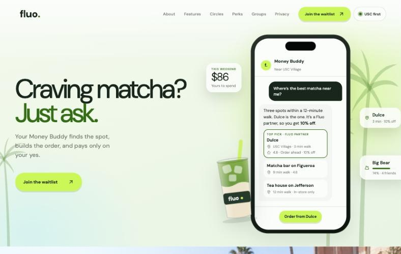
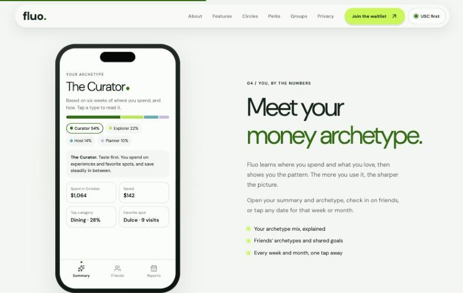
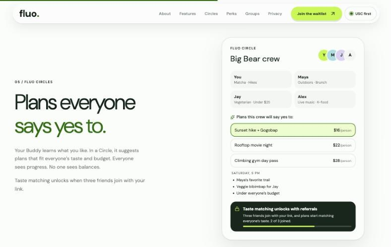
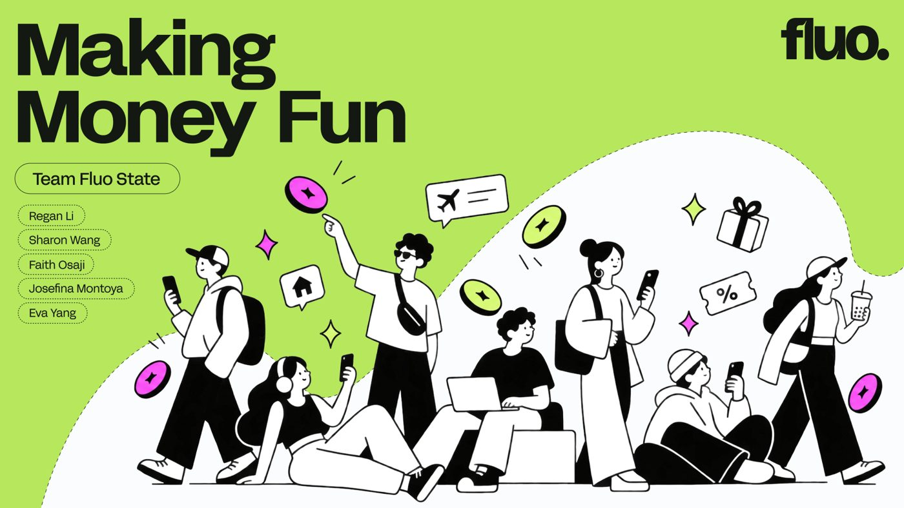
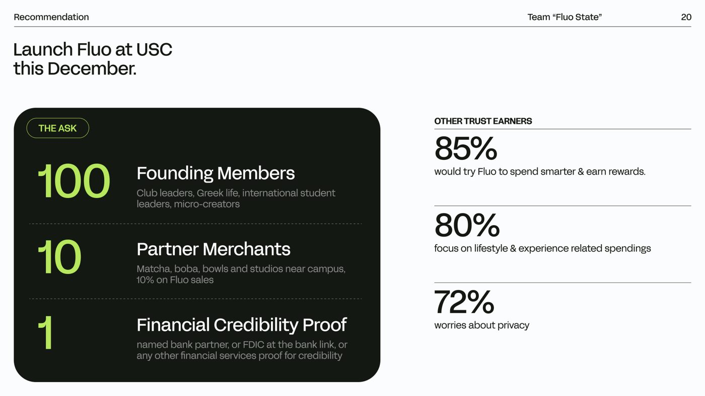
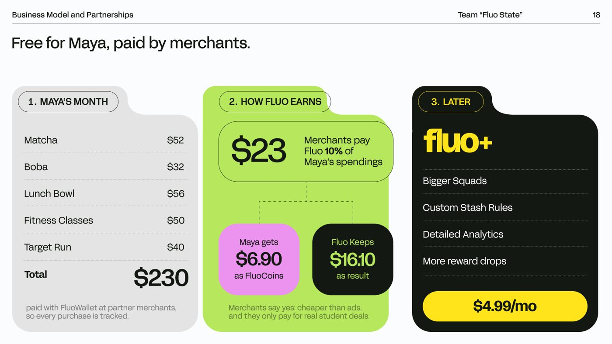
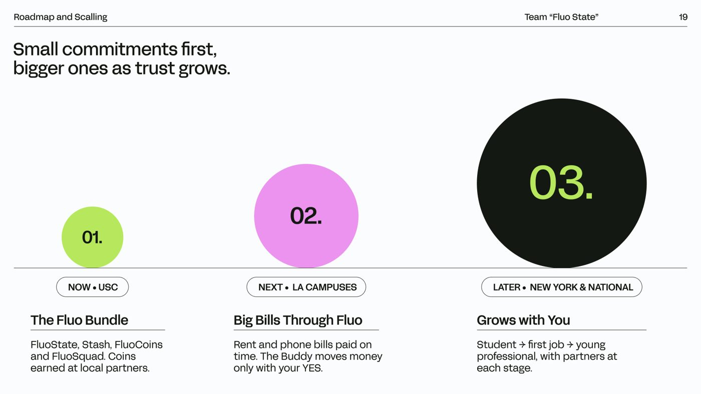
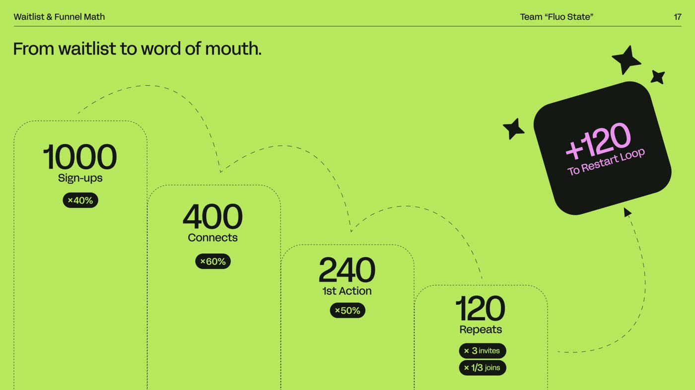
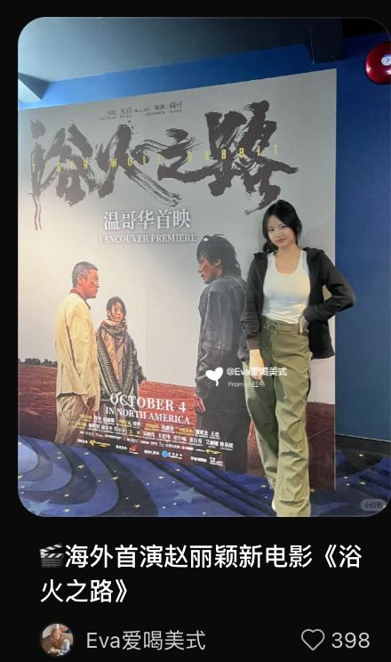

Portfolio · Los Angeles
I build brands people want to share. Five years of making content on Xiaohongshu and Douyin taught me what makes an audience stop scrolling. Now I pair that instinct with research and analytics.

I'm a Master of Science in Marketing candidate at USC Marshall, specializing in analytics. Before that I studied Food, Nutrition & Health with a Commerce minor at UBC, which is how I ended up working across food brands, regulatory teams and small tea shops.
My work sits where creative meets measurable: I script, shoot and edit short video, write the copy, design the assets, then read the numbers to see what worked. I work in English and Mandarin, so I can take a brand to audiences on both sides of the Pacific.
A student money app pitched at USC Marshall, a neighbourhood tea shop, and my own channels with millions of views.












Behind the creative work: interviews, surveys and analysis that tell me what to make.
Business Research Assistant on a grounded-theory study of family business succession.
VP, Student Advising Committee. Marketing Case Competition semi-finalist (Fluo).
Advised launches across Canada, the U.S., the EU and Southeast Asia. Automated a 50,000+ data point allergen and certification database, cutting SKU review time 3x.
Canva, Figma, CapCut, HubSpot, Salesforce, Qualtrics, Google Analytics, Google Trends, NVivo
Python, Stata, Excel, regression modeling, survey design, data visualization, thematic analysis
Google Digital Marketing & E-commerce, Marketing with Canva, Storytelling for Digital Marketing (Santander), PwC Management Consulting simulation, LVMH Insider
Open to marketing, brand and content roles, and to collaborations.